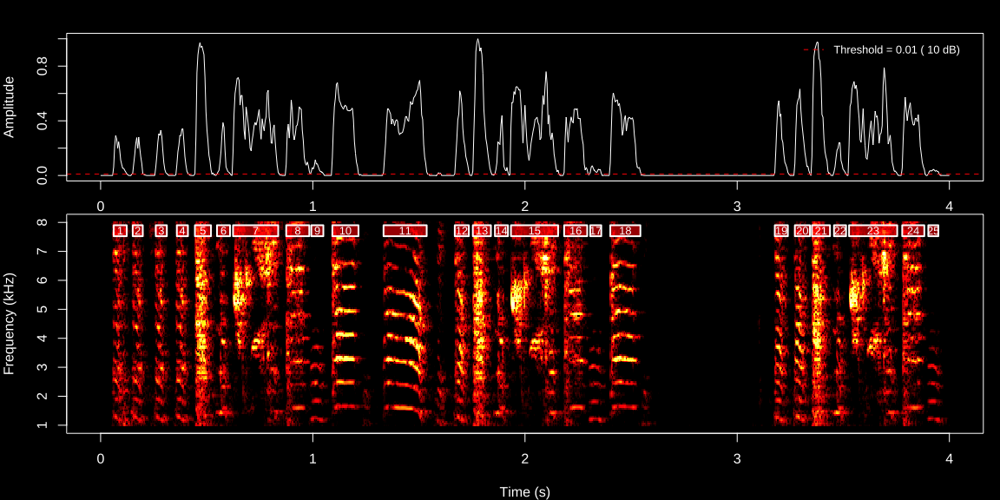
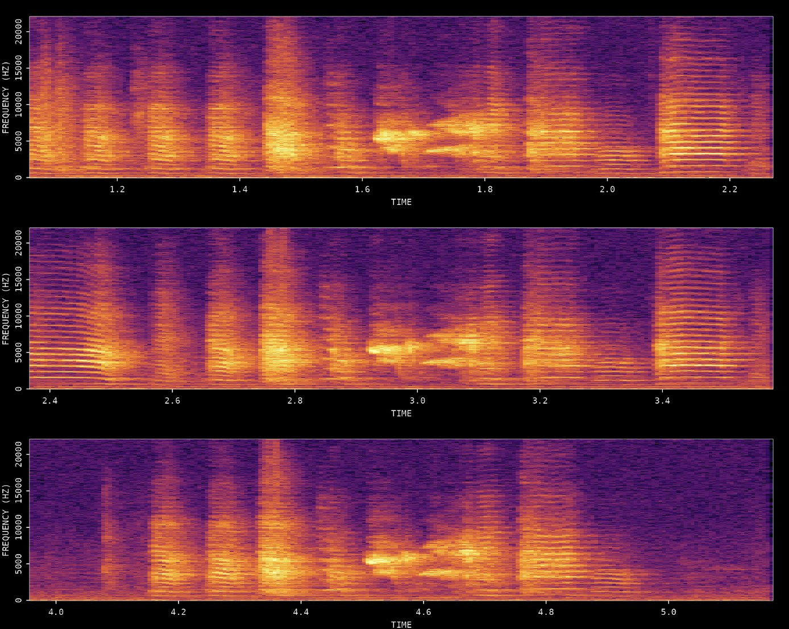
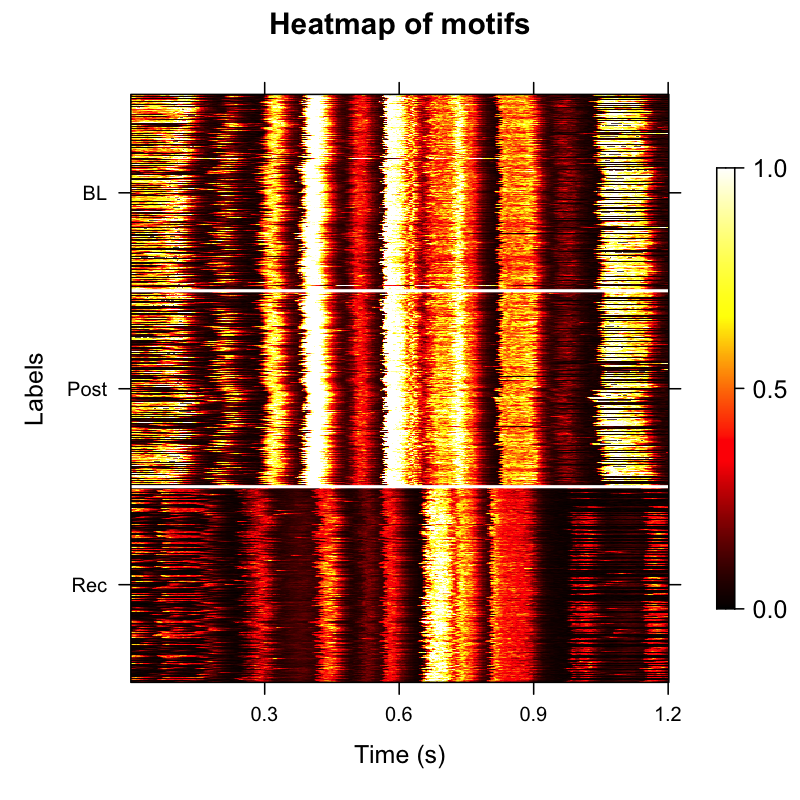
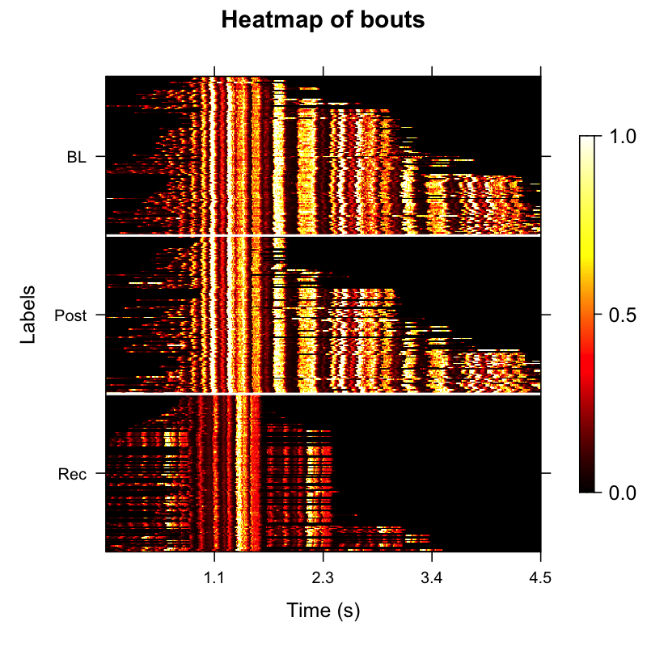
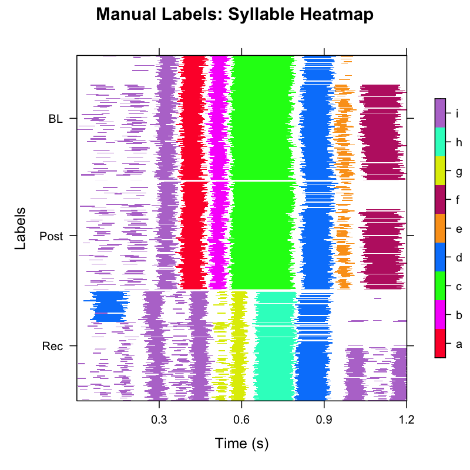

ASAP (Automated Sound Analysis Pipeline) provides an integrated toolkit for processing, analysing, and visualising avian vocalizations — from single audio files to large longitudinal datasets. Choose a tutorial below to get started.
Single WAV File Analysis
Learn ASAP functions using individual audio files.

Overview & Basic Audio Analysis
Load WAV files, visualise spectrograms, and explore the basic audio
analysis tools that underpin the ASAP workflow.
Beginner · ~10 min

Motif Detection
Build a cross-correlation template, detect motif occurrences in a
single recording, and review the detected segments.
Beginner · ~15 min
Longitudinal Recording Analysis with SAP Object
Batch processing of recordings across developmental time points.
Constructing a SAP Object
Organise multi-day recording directories into a SAP object
for reproducible longitudinal analysis.
Intermediate · ~10 min

Longitudinal Motif Detection
Detect and align motifs across developmental time points. Visualise
acoustic changes with amplitude heatmaps and UMAP embeddings.
Intermediate · ~25 min

Longitudinal Bout Detection
Detect song bouts across recordings, summarise motif-bout
relationships, and track changes in bout duration and density
over development.
Intermediate · ~20 min

Longitudinal Syllable Segmentation
Segment detected bouts into individual syllables, extract spectral
features, cluster segments, and visualise the acoustic structure
with UMAP dimensionality reduction.
Advanced · ~25 min

Syllable Labeling
Assign letter identities to syllable clusters using automatic
DBSCAN-based labeling and manual refinement. Verify the final
syllable inventory across developmental stages.
Advanced · ~20 min